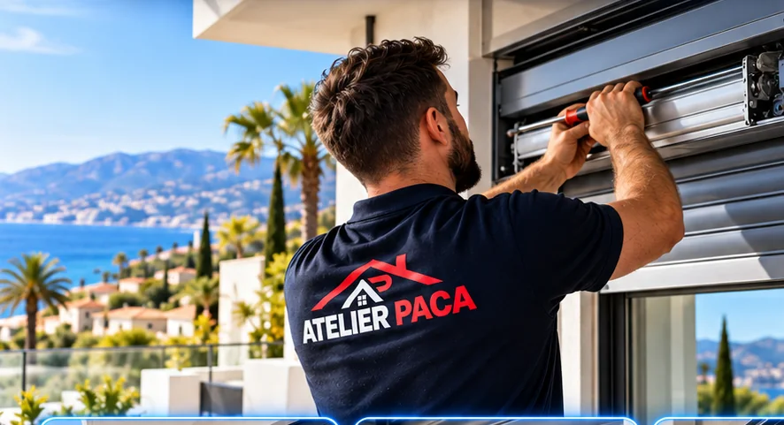

Réparation, motorisation et installation
Volets roulants à Gattières
Technicien volets roulants à Gattières (06510) : réparation, motorisation, pose par l'équipe Atelier PACA, à 30 minutes de notre siège d'Antibes. Dépannage sous 48 h, plus vite en urgence, prix annoncé avant intervention, devis gratuit.

Volets roulants à Gattières : réparation, motorisation et pose
Un volet roulant bloqué à Gattières ? Atelier PACA répare, motorise et remplace les volets roulants dans toute la commune, de Gattières village aux Plans, à 30 minutes de notre siège d'Antibes. Volet coincé, moteur en panne, lames cassées, sangle rompue, télécommande qui ne répond plus : un technicien diagnostique sur place et change uniquement la pièce en cause.
La réparation de volet roulant à Gattières se fait 7 j/7, souvent dans la journée pour un volet bloqué ouvert. Nous motorisons aussi les volets manuels (Somfy, Simu, Bubendorff) et posons des volets neufs sur mesure. Prix annoncé avant le déplacement, devis gratuit.
- Dépannage volet roulant bloqué, manuel ou électrique, 7 j/7
- Remplacement de moteur (Somfy, Simu, Bubendorff, Nice) et réglage des fins de course
- Motorisation d'un volet manuel existant, commande radio ou filaire
- Lames, tablier, sangle, axe, attaches et télécommandes
- Pose de volets roulants neufs sur mesure, aluminium ou PVC
- Stores bannes, portails et domotique de la maison
Atelier PACA, technicien volets roulants à Gattières depuis 2015
Gattières, village perché de la rive droite du Var, a des maisons anciennes au village et des villas sur les coteaux et dans la plaine. Chauffage, eau chaude, électricité à mettre aux normes, climatisation et volets : nous intervenons sous 48 h depuis Antibes, avec des tournées groupées sur Carros et Saint-Jeannet.
Tarifs volets roulants à Gattières
Diagnostic et remise en marche rapide, manuel ou électrique.
Dépose, pose du moteur neuf et réglage des fins de course.
Transformation d'un volet manuel en volet motorisé, compatible domotique.
Large choix de couleurs et matériaux.
Tarif minimum d'intervention : 110 € HT (TVA à 10 % ou 20 % selon la nature des travaux et l'ancienneté du logement). Autres prix indicatifs 2026. Majoration possible la nuit, le week-end et les jours fériés, toujours annoncée avant le déplacement. Tarif définitif communiqué avant toute intervention.
Quartiers couverts à Gattières
Nous intervenons dans toute la commune : Gattières village, les Plans, la plaine du Var, les Condamines. Habitat le plus fréquent à Gattières : maisons du village perché et villas des coteaux. Volets de copropriété à motoriser sans toucher à la façade, résidences de vacances où un volet bloqué doit être réglé pendant l'absence du propriétaire, villas avec commande centralisée : nous connaissons ces cas.
Questions fréquentes — volets roulants à Gattières
Un volet bloqué à Gattières, intervenez-vous le jour même ?
Pour un volet bloqué ouvert (sécurité) ou fermé (pièce sans lumière), nous intervenons dans les meilleurs délais, 7 j/7, souvent dans la journée. Gattières est à 30 minutes de notre siège d'Antibes, et nos techniciens ont les pièces courantes en stock.
Combien coûte la réparation d'un volet roulant à Gattières ?
Le dépannage de volet roulant à Gattières démarre à 110 € HT (sangle, attaches, réglage). Comptez à partir de 200 € TTC pour des lames ou un tablier, 300 € TTC posé pour un moteur, 250 € TTC pour motoriser un volet manuel. Devis gratuit, prix annoncé avant le déplacement.
Les volets roulants à Gattières s'usent-ils vite ?
Soleil, vent, sel pour les quartiers proches de la mer et usage quotidien usent lames, axes et moteurs. Un contrôle tous les deux ans, un graissage des pièces mobiles et un tablier aluminium laqué limitent fortement les pannes de volets roulants à Gattières.
Motorisez-vous des volets en copropriété à Gattières ?
Oui, sans modification de façade dans la plupart des cas : le moteur se loge dans l'axe existant et la commande radio évite les saignées. Nous fournissons les informations utiles pour votre syndic si nécessaire.
Les autres métiers Atelier PACA à Gattières
Un seul numéro pour toute la maison : si votre volets roulants s'accompagne d'un autre besoin, la même équipe s'en charge.
Technicien volets roulants dans les villes voisines de Gattières
Technicien volets roulants à Gattières : on vous rappelle sous 2 h
Appelez, écrivez sur WhatsApp ou laissez vos coordonnées : un technicien vous répond avec un prix clair.